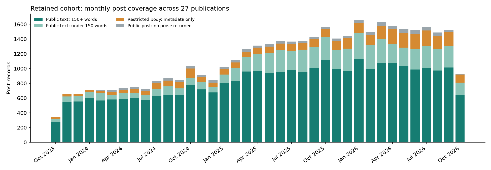
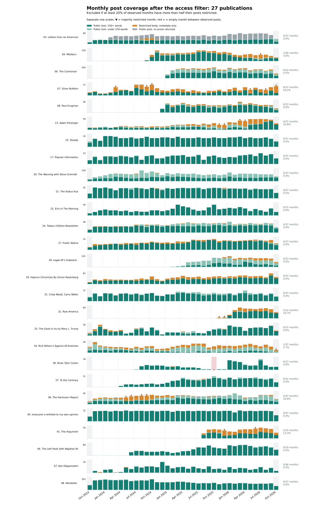

ORIGINAL TOP 50 · RESTRICTION FILTER · OCTOBER 19, 2026
27 publications remain; 23 are excluded. The filter removes a whole publication if at least one in five of its observed months has more than half its posts marked restricted.
All reports · Original fifty-publication coverage · Download every inclusion decision and monthly count
Months with no post records are left out of the denominator: they have no defined restricted share. This avoids treating months before a publication appears, or unexplained empty months, as evidence of unrestricted content. The partial October 2023 and October 2026 months are included when they have posts. Removing those partial months gives the same 27 retained publications.
Example: a publication observed in 37 months is excluded at 8 marked months. One observed in 20 months is excluded at 4. A month with 5 restricted posts out of 10 is not marked; 6 out of 10 is marked.
This uses the same October 18, 2023–October 18, 2026 window and the original top fifty. The ranks 51–100 expansion is separate. Original records are preserved.
The retained publications contribute 37,431 posts with some public text, 3,726 restricted-body records, and 1,075 public posts with no returned prose. Their captured discussions number 4,855, containing 428,755 starting comments and 528,401 replies. These are all saved discussions for retained publications, not a new random draw.
We keep all recorded months for each retained publication, including its occasional heavily restricted month. The filter does not make remaining restricted posts readable, and 150 words does not guarantee a complete article.
Open all 27 time series at full size → Download PNG

Green: saved public text. Orange: restricted bodies with metadata. Gray: public posts without prose. Each row below uses its own vertical scale. A ▼ marks a month with more than half its posts restricted; a red × marks an empty month between observed posts. Numbers on the right show marked months divided by observed months. Calendar edges are partial months.

| Rank / publication | Months with posts | Months >50% restricted | Share of months | Decision | Post records | Public texts 150+ words | Captured discussions |
|---|---|---|---|---|---|---|---|
| 3. Letters from an American | 37 | 0 | 0.0% | Retained | 2,199 | 1,045 | 209 |
| 4. Meidas+ | 26 | 1 | 3.8% | Retained | 2,881 | 2,068 | 155 |
| 6. The Contrarian | 22 | 0 | 0.0% | Retained | 4,768 | 2,786 | 134 |
| 7. Silver Bulletin | 37 | 6 | 16.2% | Retained | 430 | 259 | 191 |
| 8. Paul Krugman | 23 | 0 | 0.0% | Retained | 763 | 599 | 137 |
| 13. Adam Kinzinger | 37 | 4 | 10.8% | Retained | 1,082 | 544 | 206 |
| 15. Steady | 37 | 0 | 0.0% | Retained | 488 | 485 | 207 |
| 17. Popular Information | 37 | 0 | 0.0% | Retained | 595 | 578 | 206 |
| 20. The Warning with Steve Schmidt | 37 | 0 | 0.0% | Retained | 2,611 | 1,307 | 210 |
| 21. The Status Kuo | 37 | 0 | 0.0% | Retained | 1,063 | 1,034 | 210 |
| 22. Erin In The Morning | 37 | 0 | 0.0% | Retained | 793 | 792 | 210 |
| 24. Today's Edition Newsletter | 37 | 0 | 0.0% | Retained | 1,280 | 1,020 | 208 |
| 27. Public Notice | 37 | 0 | 0.0% | Retained | 871 | 758 | 210 |
| 28. Legal AF's Substack | 23 | 0 | 0.0% | Retained | 3,207 | 1,098 | 129 |
| 29. Hopium Chronicles By Simon Rosenberg | 37 | 0 | 0.0% | Retained | 1,756 | 1,323 | 209 |
| 31. Chop Wood, Carry Water | 37 | 0 | 0.0% | Retained | 954 | 854 | 209 |
| 32. Raw America | 12 | 2 | 16.7% | Retained | 569 | 401 | 66 |
| 33. The Good in Us by Mary L. Trump | 37 | 0 | 0.0% | Retained | 761 | 683 | 207 |
| 34. Rick Wilson’s Against All Enemies | 37 | 1 | 2.7% | Retained | 988 | 224 | 164 |
| 36. Brian Tyler Cohen | 27 | 0 | 0.0% | Retained | 178 | 168 | 121 |
| 37. To the Contrary | 31 | 0 | 0.0% | Retained | 959 | 889 | 178 |
| 38. The Hartmann Report | 37 | 4 | 10.8% | Retained | 2,554 | 1,337 | 207 |
| 39. everyone is entitled to my own opinion | 37 | 0 | 0.0% | Retained | 1,098 | 1,095 | 210 |
| 41. The Argument | 15 | 2 | 13.3% | Retained | 400 | 224 | 93 |
| 46. The Left Hook with Wajahat Ali | 29 | 0 | 0.0% | Retained | 1,523 | 1,492 | 170 |
| 47. Ken Klippenstein | 36 | 0 | 0.0% | Retained | 429 | 424 | 189 |
| 48. Wonkette | 37 | 0 | 0.0% | Retained | 7,032 | 6,872 | 210 |
These meet the requested threshold and are left out of this proposed analysis cohort. Their original data remain in the archive.
| Rank / publication | Months with posts | Months >50% restricted | Share of months | Decision | Post records | Public texts 150+ words | Captured discussions |
|---|---|---|---|---|---|---|---|
| 1. The Free Press | 37 | 37 | 100.0% | Excluded | 5,824 | 41 | 29 |
| 2. The Bulwark | 37 | 18 | 48.6% | Excluded | 9,023 | 3,799 | 210 |
| 5. Zeteo | 33 | 16 | 48.5% | Excluded | 2,392 | 1,009 | 185 |
| 9. The Borowitz Report | 32 | 31 | 96.9% | Excluded | 801 | 26 | 26 |
| 10. Robert Reich | 37 | 36 | 97.3% | Excluded | 1,718 | 70 | 58 |
| 11. Civil Discourse with Joyce Vance | 37 | 25 | 67.6% | Excluded | 1,456 | 531 | 114 |
| 12. Racket News | 37 | 22 | 59.5% | Excluded | 1,502 | 371 | 190 |
| 14. Slow Boring | 37 | 36 | 97.3% | Excluded | 1,972 | 430 | 207 |
| 16. The Preamble | 29 | 28 | 96.6% | Excluded | 1,000 | 38 | 30 |
| 18. Hope for America with Heather Delaney Reese | 16 | 4 | 25.0% | Excluded | 854 | 669 | 82 |
| 19. Lincoln Square Media | 21 | 10 | 47.6% | Excluded | 2,450 | 779 | 121 |
| 23. The Weekly Dish | 37 | 36 | 97.3% | Excluded | 421 | 27 | 0 |
| 25. The Message Box | 37 | 33 | 89.2% | Excluded | 527 | 175 | 151 |
| 26. The.Ink | 37 | 31 | 83.8% | Excluded | 1,197 | 191 | 86 |
| 30. News Not Noise | 37 | 36 | 97.3% | Excluded | 438 | 53 | 43 |
| 35. Pantsuit Politics | 37 | 33 | 89.2% | Excluded | 1,510 | 480 | 167 |
| 40. Crooked Media | 20 | 15 | 75.0% | Excluded | 1,018 | 308 | 93 |
| 42. HOWL | 13 | 10 | 76.9% | Excluded | 235 | 45 | 37 |
| 43. Strength In Numbers | 23 | 16 | 69.6% | Excluded | 359 | 106 | 61 |
| 44. Proof | 37 | 29 | 78.4% | Excluded | 183 | 39 | 39 |
| 45. The Beinart Notebook | 37 | 19 | 51.4% | Excluded | 405 | 160 | 117 |
| 49. The Huckabee Post | 37 | 37 | 100.0% | Excluded | 1,636 | 12 | 6 |
| 50. Ettingermentum Newsletter | 37 | 34 | 91.9% | Excluded | 187 | 18 | 18 |
The retained right/center-right publication is Charlie Sykes’s To the Contrary, which is anti-Trump. Both The Weekly Dish and The Huckabee Post are excluded. The filtered cohort therefore has no currently classified pro-Trump right publication. These remain provisional publication-level judgments. This is a more accessible-text cohort, not a balanced left–right sample.
Using all 37 months as the denominator, even when a publication has no recorded posts in some months, would retain 28 and exclude 22. The only changed decision is Hope for America with Heather Delaney Reese: 4 marked months out of 16 observed months is 25%, so it is excluded under the main rule; 4 out of 37 is 10.8%, which would retain it. The full list of decisions is saved with both denominators.
Excluding partial boundary months from the observed-month calculation changes no decisions. Empty-month concerns from the earlier audit still apply; passing the restriction filter is not a check of complete historical coverage.